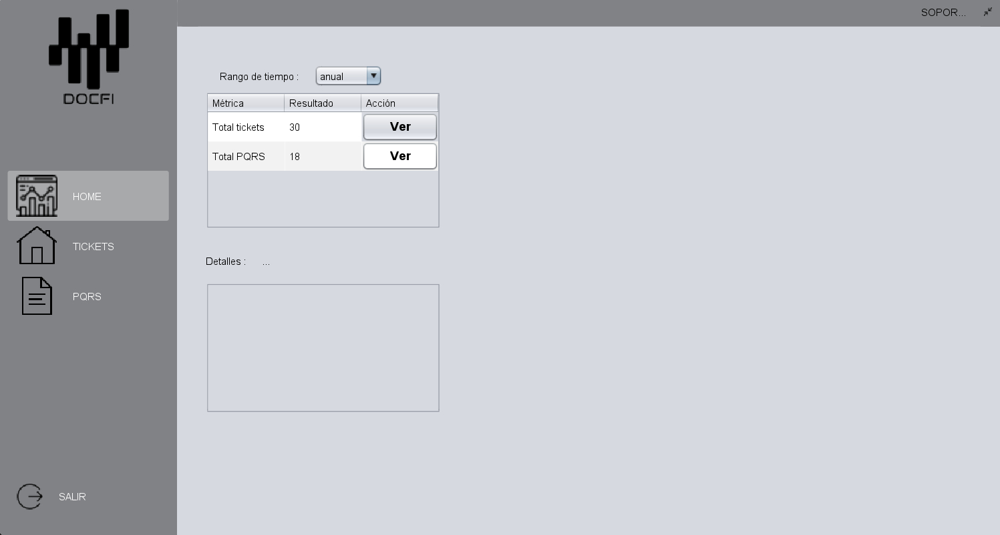
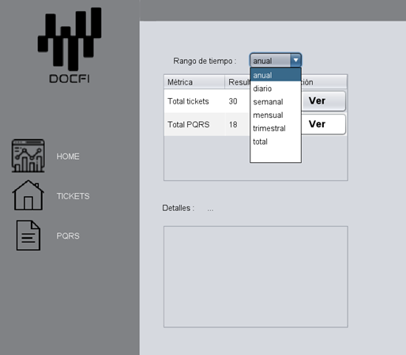
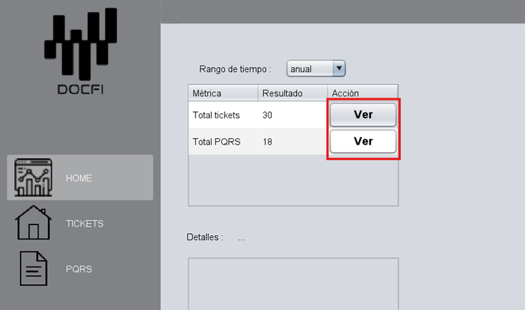
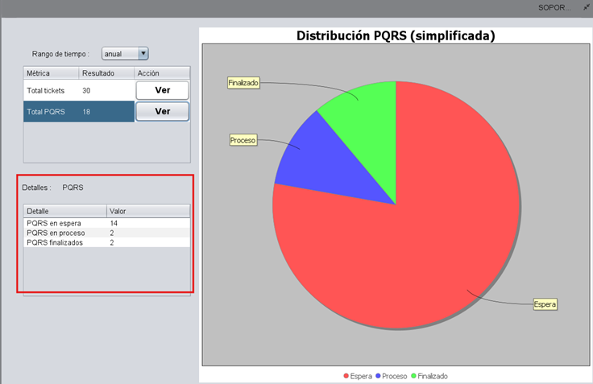
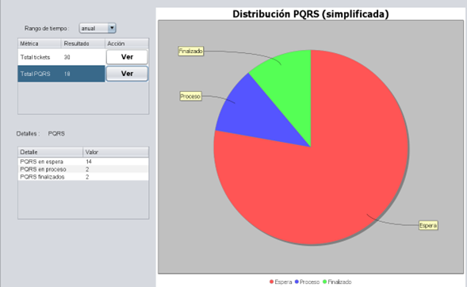

Uso del Software
Aquí se describen las funcionalidades principales del perfil de soporte:
1. Inicio
Al iniciar sesión como usuario de soporte, verás la siguiente interfaz:
2. Distribución de la Interfaz
Panel izquierdo
Contiene botones de navegación con íconos e identificadores:
- HOME
- TICKETS
- PQRS
- SALIR (Cierra el aplicativo)

Panel superior
- USUARIO: Muestra el tipo de usuario
- MINIMIZAR: Reduce el aplicativo
3. Funcionalidades
HOME
En la pestaña HOME encontramos los siguientes elementos:

1. Rango de tiempo: Permite definir el rango temporal de las métricas (PQRS y Tickets).
2. Ver: Muestra las métricas seleccionadas (PQRS o Tickets).
3. Detalle: Al hacer clic en VER, se muestra información detallada y contable sobre el estado de los PQRS o Tickets.
Ejemplo de métrica PQRS en un año:
4. Menú Contextual Interactivo
Permite personalizar y exportar los gráficos métricos:
- Modificar visualmente: Cambiar colores, fuente, bordes, fondo, etc.
- Copiar: Copia la imagen del gráfico al portapapeles.
- Guardar como: Guarda el gráfico como imagen.
- Imprimir: Envía el gráfico a la impresora.
- Zoom: Acercar o alejar para mejor visualización.
- Escala automática: Ajuste automático del gráfico según contenido.